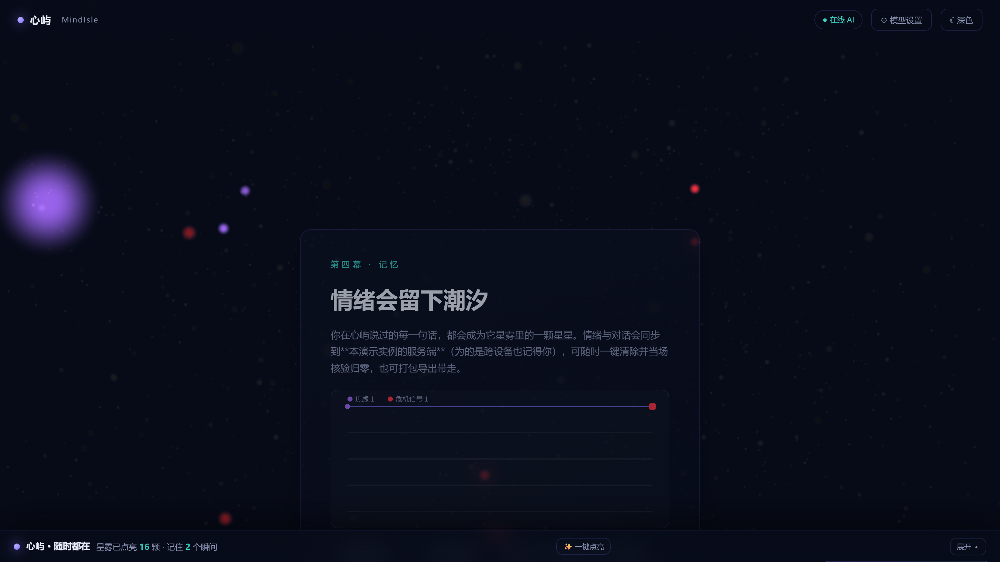

本册所载全部数据与截图，均为团队在自有环境下的实际运行结果，可按下文命令现场复跑核验。其中不含任何第三方机构认证、专利/软件著作权证书、论文录用证明、企业合作意向书或真实用户反馈——此类材料本团队目前尚未取得，故不在本册中出现，亦不以任何形式虚构。
本册性质为自测留痕证据，用于支撑作品功能真实可用与效果可验证，不等同于第三方检测报告或应用成效证明。
| 序号 | 材料 | 性质 | 本册收录 |
|---|---|---|---|
| 1 | 情绪识别评测集实测（73 条，离线/在线双口径） | 自测 | ✅ 第二节 |
| 2 | 冻结盲测集四路对比（237 条） | 自测 | ✅ 第三节 |
| 3 | 服务端构建期测试与覆盖率 | 自测 | ✅ 第四节 |
| 4 | 功能实测截图（入口 / 三级路由证据 / 危机拦截 / 情绪曲线） | 自测 | ✅ 第五节 |
| 5 | 专利证书 / 软件著作权证书 | 第三方 | ❌ 未取得 |
| 6 | 论文录用或发表证明 | 第三方 | ❌ 未取得 |
| 7 | 企业合作意向书 / 试点应用证明 | 第三方 | ❌ 未开展 |
| 8 | 真实用户反馈（试用问卷与访谈） | 用户方 | 🔴 采集中 |
第 8 项采集完成后，将追加于本册末尾并整体重新出稿；在此之前不在方案中宣称已有用户试点。
评测集 _test/emotion-eval-dataset.json（73 条，含危机类），服务端 GET /api/emotion/eval 可现场复跑，前端与服务端双端逐项对账。
| 口径 | 准确率 | 危机项 | 说明 |
|---|---|---|---|
| 离线（词典快判） | 98.6%（72/73） | 6/6 | 断网可跑，零成本 |
| 在线（三级路由） | 98.6%（72/73） | 6/6 | 与离线恒等（结构性保证：最终读数均由词典裁决） |
盲测集 _test/emotion-blindset.json（237 条，与训练集零交集，口语化生成域）。原始输出 _test/_aic_ref/blindset_4way_report.json。
| 判定腿 | 准确率（非危机 231 条） | macro-F1 | 平均延迟 | 离线可用 |
|---|---|---|---|---|
| 词典引擎（规则） | 46.3% | 0.433 | ≈0 ms | ✅ |
| 自研微调模型（chinese-roberta-wwm-ext） | 92.2% | 0.913 | 26.6 ms | ✅ |
| 云端大模型（可选仲裁） | 97.0% | 0.974 | 646.8 ms | ❌ |
| 三级路由（当前上线策略） | 46.3% | 0.433 | 30.5 ms | ✅ |
① 域偏移：同一引擎在两个基准上结论相反——73 条词典主场 98.6%，237 条口语域仅 46.3%；本地模型在口语域 92.2%。这是分词与语义匹配路线的固有差异，非缺陷隐瞒。
② 危机词表盲区：盲测 6 条危机改写句，词典仅命中 2 条（"想消失""撑不下去"等口语改写未覆盖）。危机识别为确定性规则短路层，命中即转介专业热线；词表扩充已登记为后续改进项。
③ 模型与云端大模型均未训练危机类（盲测危机 0/6），此系安全设计：危机判定永不概率化。
| 项 | 实测值 | 门禁 |
|---|---|---|
| 用例数 | 101 | 下限由 _test/java_test_guard.py 常驻盯守 |
| 行覆盖率 | 97% | 阈值 0.90，不达标即构建失败 |
| 分支覆盖率 | 95.2% | 阈值 0.90 |
以下四图均为本机双服务在线状态下实拍，语义与当前代码一致；可现场复现。

# 1) 启动双服务（健康双 UP 方为成功） powershell -File ml\start_all.ps1 # 2) 浏览器打开 http://127.0.0.1:8123 ，并请求 GET /api/emotion/eval 复跑 73 条评测集 # 3) 237 条冻结盲测集四路对比 python _test\emotion_blindset_eval.py # 4) 服务端构建期测试与覆盖率门禁 mvn -B -f server\pom.xml test
本册为合并后的单一 PDF 佐证材料，随材料补充整体重出，不做分册提交。